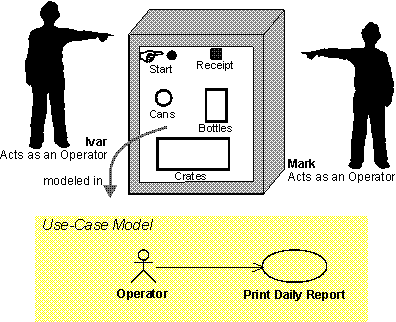
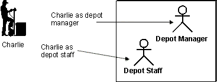
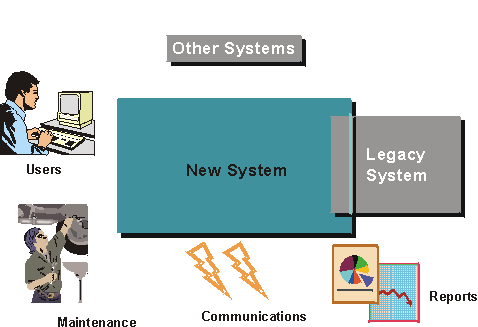
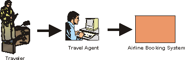
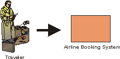

| Guideline: Actor |
 |
|
| Related Elements |
|---|
ExplanationTo fully understand the system's purpose you must know who the system is for, that is, who will be using the system. Different user types are represented as actors. An actor is anything that exchanges data with the system. An actor can be a user, external hardware, or another system. The difference between an actor and an individual system user is that an actor represents a particular class of user rather than an actual user. Several users can play the same role, which means they can be one and the same actor. In that case, each user constitutes an instance of the actor.
 Ivar and Mark are operators of a recycling machine. When they are using the machine each is represented by an instance of the actor Operator. However, in some situations, only one person plays the role modeled by an actor. For example, there may be only one individual playing the role of system administrator for a rather small system. The same user can also act as several actors (that is, the same person can take on different roles).
 Charlie uses the Depot-Handling System primarily as Depot Manager, but sometimes he also uses the Depot-Handling System as ordinary Depot Staff. How to Find Actors
 What in the system's surroundings will become actors to the system? Start by thinking of individuals who will use the system. How can you categorize them? It is often a good habit to keep a few individuals (two or three) in mind and make sure that the actors you identify cover their needs. The following set of questions is useful to have in mind when you are identifying actors:
There are several different aspects of a system's surroundings that you will represent as separate actors:
Example:For a Depot-Handling System, which supports the work in a depot, there are several categories of users: Depot Staff, Order Registry Clerk, Depot Manager. All these categories have specific roles in the system and you should therefore represent each one by a separate actor.
Example:In a recycling machine used for recycling cans, bottles, and crates, Customer is the main actor, the one for whom the system is primarily built. Someone has to manage the machine, however. This role is represented by the actor Operator.
Example:A ventilation system that controls the temperature in a building continuously gets metered data from sensors in the building. Sensor is therefore an actor.
Example:An automated teller machine must communicate with the central system that holds the bank accounts. The central system is probably an external one, and should therefore be an actor. If you are building a internet-based application, your primary actors will in a sense be anonymous. You don't really know who they are, and you cannot make any assumptions about their skills and background. But you can still describe the role you expect them to play towards your system. Example: Systems that provide information (such as search engines) will have purely anonymous actors who access the application only to find information about a particular topic. Example: Government-informational sites whose charter is to provide information to any citizen or 'netizen' about laws and regulations, practices, forms, and so on. For example, in the US the Internal Revenue Service has page that provides information around how to complete a tax return. This includes having all forms available electronically, as well as allowing individuals to file their tax return electronically. The role of the primary actor in this case is anyone interested in how you file a tax return in the US. Of course, once the individual attempts filing the return, she can no longer be anonymous. Actors Help Define System BoundariesFinding the actors also means that you establish the boundaries of the system, which helps in understanding the purpose and extent of the system. Only those who directly communicate with the system need to be considered as actors. If you are including more roles than that in the system's surroundings, you are attempting to model the business in which the system will be used, not the system itself. Example:In an airline booking system, what would the actor be? This depends on whether you are building a airline booking system to be used by a travel agent, or whether you are building a system to which the passenger can connect directly through Internet.
 If you are building an airline booking system to be used at a travel agent, the actor would be travel agent. The traveler doesn't interact directly with the system, and is therefore not an actor
 If you are building a booking system that will allow users to connect via the Internet, the traveler will interact directly with the system and is therefore an actor to it. Brief DescriptionThe brief description of the actor should include information about:
The brief description should be, at most, a few sentences long. Example:In the use-case model of the Recycling Machine, the three actors are briefly described as follows: Customer: The Customer collects bottles, cans and crates at home and brings them back to the shop to get a refund. Operator: The Operator is responsible for maintenance of the recycling machine. Manager: The Manager is responsible for questions about money and the service the store delivers to the customers. Actor CharacteristicsThe characteristics of an actor might influence how the system is developed, and in particular how an optimally usable user interface is visually shaped. Note that if business workers corresponding to the actors are already described in a business-object model, some of the following characteristics may have already been captured. The actor characteristics include:
In most cases, a rough estimate of the number of users and frequency of use will suffice. A difference between 30 and 40 will not affect how the user interface is shaped, but a difference between 3 and 30 might. Other actor characteristics include:
These characteristics are used primarily when identifying the boundary classes and the prototype, to ensure the best usability match between the user community and the user interface design. Example:The following is an example of characteristics of the Mail User actor. This is the actor that, amongst other things, interacts with the Manage Incoming Mail Messages use case.
|
© Copyright IBM Corp. 1987, 2006. All Rights Reserved. |